|
|
| soft corals text index | photo index |
| Phylum Cnidaria > Class Anthozoa > Subclass Alcyonaria/Octocorallia > Order Alcyonacea > Family Nephtheidea |
| Spiky
flowery soft coral Stereonephthya sp.* Family Nephtheidae updated Jan 2020 Where seen? This flowery soft coral with spikes common on some of our shores. On coral rubble near living reefs. Features: Colony bushy about 6-12cm. Colony is branched with 'stems' emerging from a central 'trunk'. The 'stem' white or transparent, with sclerites embedded in the tissues. The polyps appear in clusters at the tips of the branches. Polyps tiny (about 0.5cm) with eight branched tentacles. The polyps may be white, beige, yellow, orange to purple and maroon. There are spikes next to the polyps, sometimes nearly as large as the polyps. The spikes are more obvious when the polyp tentacles are retracted and the polyps curl up into little balls. The animals do not have symbiotic algae (zooxanthellae) and thus can be found in murky water and dark places. |
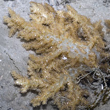 Pulau Hantu, Jan 12 |
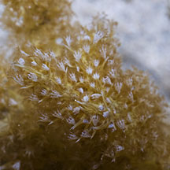 |
 Spikes next to polyps. |
|
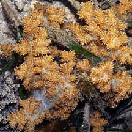 Cyrene Reef, Aug 08 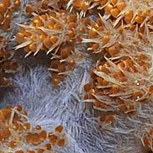 Spikes next to polyps. |
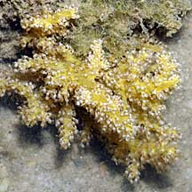 Tanah Merah, Aug 09 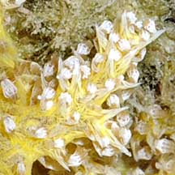 Spikes next to polyps. |
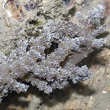 Tuas, Nov 03 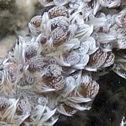 Spikes next to polyps. |
|
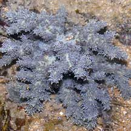 Tuas, Dec 03 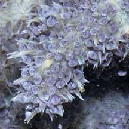 |
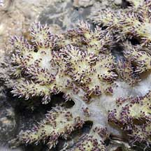 Tuas, Nov 03 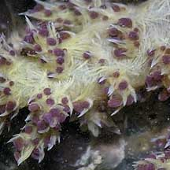 |
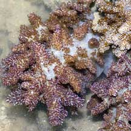 Tuas, Dec 03 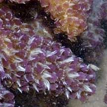 |
| Flowery friends: Tiny animals may be found on spiky flowery soft corals. These include tiny false cowrie snails, tiny red-nose shrimps and tiny colourful brittle stars. |
*ID awaits confirmation. Species are difficult to positively identify without close examination.
On this website, they are grouped by external features for convenience of display
| Spiky flowery soft corals on Singapore shores |
On wildsingapore
flickr
|
| Other sightings on Singapore shores |
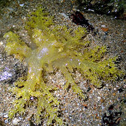 Small Sisters Island, Aug 20 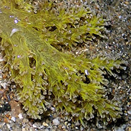 Photo shared by Jianlin Liu on facebook. |
|
Links
References
|